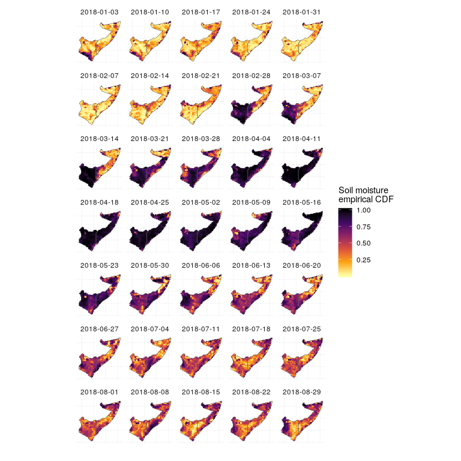

Oct 1, 2018
rOpenSci HQ
- OzUnconf https://ozunconf18.ropensci.org/ is running for the third year. The unconference is 22-23 November in Melbourne, Australia. OzUnconf is based on our main unconference in the US (http://unconf18.ropensci.org/) but more accessible to folks in Australia/Asia. Deadline for nominations is 12 October.
- A call to anyone making R packages - especially rOpenSci contributors. Help us build capacity of open source software users and developers with Hacktoberfest. Create an issue label in your repository named
hacktoberfest, like these https://github.com/search?q=user%3Aropensci+label%3Ahacktoberfest. The label will help potential contributors find your issues!
Software 📦
CRAN:  GitHub:
GitHub: 
New packages
- The first version (
v0.2) ofavis on CRAN - bindings to FFmpeg http://www.ffmpeg.org/ AV library for working with audio and video in R. Check out the README to get started.

- A new version (
v0.2.0) ofsmapris on CRAN - acquisition and processing of NASA Soil Moisture Active-Passive (SMAP) data. This isn’t the first version on CRAN, but is the first version on CRAN under rOpenSci. See the NEWS for changes. Checkout the docs to get started.
New versions
- A new version (
v0.9.4) ofrzmqis on CRAN - R Bindings for ZeroMQ, a lightweight messaging kernel. See the release notes for changes. Checkout the README to get started.
catching signals and interrupts when polling
- A new version (
v0.4.0) oflandscapetoolsis on CRAN - Landscape Utility Toolbox. See the NEWS for changes. Checkout the docs to get started.
minor bug fixes; improve
util_facetplot()/theme_facetplot()/util_classify() - A new version (
v6.0.0) ofdrakeis on CRAN - DESCRIPTION. See the release notes for changes. Checkout the docs to get started.
breaking changes, new features, and bug fixes, oh my!
- A new version (
v0.3.3) ofjstoris on CRAN - Read Data from JSTOR Data for Research. See the release notes for changes. Checkout the docs to get started.
option to download most recent data removed; new featurs and bug fixes
- A new version (
v3.0.5) ofrotlis on CRAN - an interface to the Open Tree of Life API. See the release notes for changes. Checkout the vignettes to get started.
make data types
tnrs_match_names()output consistent - A new version (
v0.3.1) ofNLMRis on CRAN - simulate neutral landscape models. See the NEWS for changes. Checkout the docs to get started.
bug fixes, update docs
- A new version (
v1.0.0) ofrebirdis on CRAN - client for the eBird database of bird observations. See the release notes for changes. Checkout the vignette to get started.
changes for new eBird API! now requires an API key
- A new version (
v0.0.4) ofarkdbis on CRAN - archive and unarchive databases using flat files. See the release notes for changes. Checkout the docs to get started.
many
unark()changes … - A new version (
v1.7.2) ofneotomais on CRAN - access the Neotoma Paleoecological Database. See the NEWS for changes. Checkout the vignette to get started.
new function
taxa()for extract taxonomic information from downloads - A new version (
v1.4.1) ofijtiffis on CRAN - comprehensive TIFF I/O with full support for ImageJ TIFF files. See the release notes for changes. Checkout the docs to get started. - A new version (
v0.3.0) ofrsnpsis on CRAN - fetch SNP (Single-Nucleotide Polymorphism) data from the web. See the release notes for changes. Checkout the vignette to get started.
ld_search()defunct, web service is gone; support for NCBI API keys - A new version (
v0.3.0) ofrcoreoais on CRAN - client for CORE https://core.ac.uk/. See the release notes for changes. Checkout the vignette to get started.
new functions
core_articles_search()/core_articles_search_()to search for articles
Software Review ✔
We accept community contributed packages via our onboarding system - an open software review system, sorta like scholarly paper review, but way better. We’ll highlight newly onboarded packages here. A huge thanks to our reviewers, who do a lot of work reviewing (see the blog post on our review system), and the authors of the packages!
If you want to be a reviewer fill out this short form, and we’ll ping you when there’s a submission that fits in your area of expertise.
The following package recently went through our onboarding process and has been approved!
- piggyback > Managing Larger Data on a GitHub Repository
- Author: Carl Boettiger
- Issue: ropensci/onboarding#220
- Reviewers:
On the blog
Software Review / Onboarding
Greg Finak wrote about their recently rOpenSci reviewed package DataPackageR: Building Reproducible Data Packages with DataPackageR. The review: ropensci/onboarding#230
Max Joseph wrote about their recently rOpenSci reviewed package smapr: Mapping the 2018 East Africa floods from space with smapr. The review: ropensci/onboarding#231

Technotes
Our own Maëlle Salmon wrote about a cool new package she’s working on! tinkr: editing Markdown documents using XML tools. Check out the package at ropenscilabs/tinkr
rOpenSci HQ
Chat with the rOpenSci team at upcoming meetings - check out where various rOpenSci team members will be. We’d love to meet you.
Use cases
The following 9 works use/cite rOpenSci software:
- Schieffer et al. used plotly in their work A Differential Host Response to Viral Infection Defines a Subset of Earlier-Onset Diverticulitis Patients 1
- Longuespée et al. used plotly in their paper In MALDI mass spectrometry imaging on formalin-fixed paraffin-embedded tissue specimen section thickness significantly influences m/z peak intensity 2
- Niedballa used taxize in their dissertation Managing and Analysing Camera Trapping Data: An Advanced Toolbox 3
- Tong et al. used plotly in their paper Transcriptomic but not genomic variability confers phenotype of breast cancer stem cells 4
- Carroll used textreuse in their paper Changes in media coverage of GCSEs from 1988 to 2017. Cambridge Assessment Research Report 5
- Lovelace & Morgan used stplanr in their conference proceedings paper Using Geocomputation to explore the active travel impacts of new roads and railways; In: GISRUK 2018 Conference Proceedings 6
- Morzaria-Luna et al. used taxize in their paper Biodiversity hotspots are not congruent with conservation areas in the Gulf of California 7
- Hawker et al. used osmdata in their paper Implications of Simulating Global Digital Elevation Models for Flood Inundation Studies 8
- Dallas & Hastings used rgbif and scrubr in their paper Habitat suitability estimated by niche models is largely unrelated to species abundance 9
In the news
In a blog post “O’Reilly animals in trouble? Conservation status of book covers” Maëlle Salmon used rOpensci packages taxize, rredlist, and robotstxt to explore the conservation status of animals on O’Reilly publishers book covers (an example book cover: http://r-pkgs.had.co.nz/).
Chris Nox, a data editor for New Zealand Herald, used DataPackageR to package up data used in news articles.
I have started converting some of the data I am using for articles into #rstats packages and making them available for others (probably just my future self).
— Chris Knox (@vizowl) September 20, 2018
First two packages are occupation definitions https://t.co/jMd2bjq9lq and school rolls https://t.co/bgI1dbMORx
In a useR 2018 talk “Saving time for researchers by creating publication lists using shiny” Adrian Barnett discussed a Shiny application that uses three rOpenSci packages: roricd, rcrossref, and roadoi
Keep up with rOpenSci
- Mailing list: Sign up with an email address to get this newsletter sent to your inbox -> ropensci.org/#subscribe
- Alternatively, you can subscribe to this newsletter via our XML feed at https://news.ropensci.org/feed.xml or our JSON feed at https://news.ropensci.org/feed.json
- rOpenSci on Twitter: @ropensci
- The rOpenSci blog at ropensci.org/blog - you can subscribe in any RSS aggregator, or manually via https://ropensci.org/feed.xml. We also announce new blog posts on our Twitter account.
Footnotes
-
Schieffer, K. M., Kline, B. P., Harris, L. R., Deiling, S., Koltun, W. A., & Yochum, G. S. (2018). A Differential Host Response to Viral Infection Defines a Subset of Earlier-Onset Diverticulitis Patients. J Gastrointestin Liver Dis, 27(3), 249-255. https://doi.org/10.15403/jgld.2014.1121.273.sch ↩
-
Longuespée, R., Kriegsmann, K., Cremer, M., Zgorzelski, C., Casadonte, R., Kazdal, D., … Kriegsmann, M. (2018). In MALDI mass spectrometry imaging on formalin-fixed paraffin-embedded tissue specimen section thickness significantly influences m/z peak intensity. PROTEOMICS - Clinical Applications, 1800074. https://doi.org/10.1002/prca.20180007 ↩
-
Niedballa, J. (2018). Managing and Analysing Camera Trapping Data: An Advanced Toolbox (Doctoral dissertation). https://refubium.fu-berlin.de/bitstream/handle/fub188/22961/Dissertation_Niedballa.pdf?sequence=3&isAllowed=y ↩
-
Tong, M., Deng, Z., Yang, M., Xu, C., Zhang, X., Zhang, Q., … Liu, Q. (2018). Transcriptomic but not genomic variability confers phenotype of breast cancer stem cells. Cancer Communications, 38(1). https://doi.org/10.1186/s40880-018-0326-8 ↩
-
Carroll, M.J. (2018). Changes in media coverage of GCSEs from 1988 to 2017. Cambridge Assessment Research Report. Cambridge, UK: Cambridge Assessment. http://www.cambridgeassessment.org.uk/Images/504456-changes-in-media-coverage-of-gcses-from-1988-to-2017.pdf ↩
-
Lovelace, R orcid.org/0000-0001-5679-6536 and Morgan, M (2018) Using Geocomputation to explore the active travel impacts of new roads and railways. In: GISRUK 2018 Conference Proceedings. GISRUK 2018 - 26th Annual GIScience Research UK Conference, 18-20 Apr 2018, Leicester, UK. GISRUK http://eprints.whiterose.ac.uk/135895/1/GISRUK2018_Contribution_121.pdf ↩
-
Morzaria-Luna, H. N., Cruz-Piñón, G., Brusca, R. C., López-Ortiz, A. M., Moreno-Báez, M., Reyes-Bonilla, H., & Turk-Boyer, P. (2018). Biodiversity hotspots are not congruent with conservation areas in the Gulf of California. Biodiversity and Conservation. https://doi.org/10.1007/s10531-018-1631-x ↩
-
Hawker, L., Rougier, J., Neal, J., Bates, P., Archer, L., & Yamazaki, D. (2018). Implications of Simulating Global Digital Elevation Models for Flood Inundation Studies. Water Resources Research. https://doi.org/10.1029/2018wr023279 ↩
-
Dallas, T. A., & Hastings, A. (2018). Habitat suitability estimated by niche models is largely unrelated to species abundance. Global Ecology and Biogeography. https://doi.org/10.1111/geb.12820 ↩